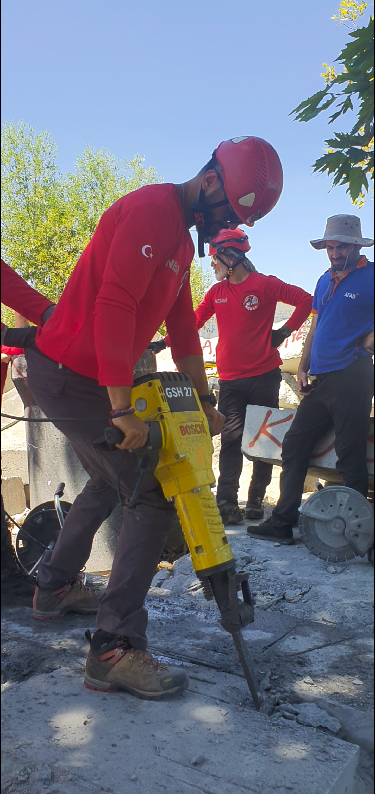
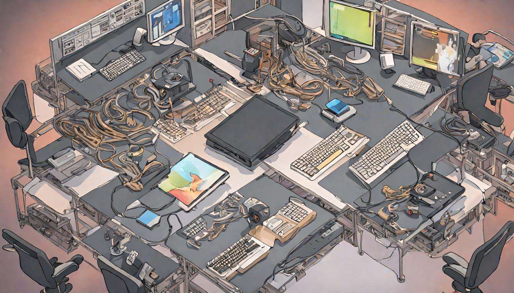
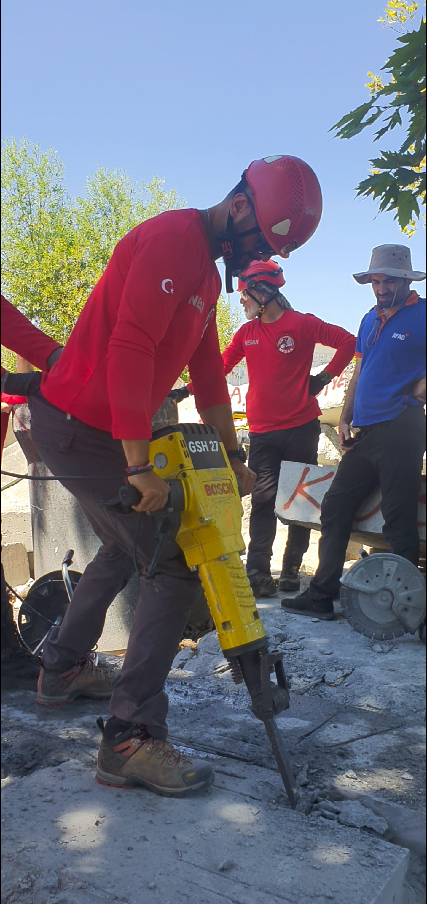
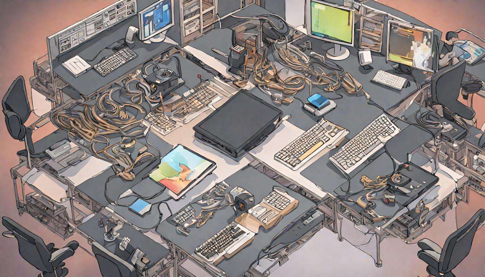

Barış Çakdı, 1991 doğumlu, yazılım öğrenme konusunda tutkulu bir bireydir. Kendine özgü bir öğrenme hızı ve yöntemleriyle, birçok yazılım dilini ve teknolojik aracı kısa sürede öğrenme becerisi geliştirmiştir. Şu anda, yoğun bir şekilde back-end teknolojilerine odaklanmış durumdadır. Bu eğitim sürecinde, web sunucusu, uygulama ve veritabanıyla ilgili derinlemesine bilgiler ediniyor.
Barış, takım çalışmasının önemini anlayan ve bu yönde uyumlu bir karaktere sahip bir bireydir. Yazılım geliştirme sürecinde çoğunlukla takım halinde çalışılacağını bilerek, takım çalışmasına uyum sağlama becerisini geliştirmiştir.
Boş zamanlarında spor yapmayı, kamp kurmayı, motorsiklet sürmeyi ve film izlemeyi sever. Ancak bu aktiviteleri, kendisini daha da fazla geliştirebileceği yazılım öğrenme sürecine ayırdığı zamandan çalmaz.
Yazılım öğrenme sürecinde sürekli olarak kendini geliştirmeye ve yeni bilgiler edinmeye odaklanmış olan Barış, yeni teknolojileri ve yazılım dillerini öğrenmek için gereken azmi ve kararlılığı göstermiştir. Bu süreçte, back-end geliştirme konusundaki bilgilerini genişletme konusunda önemli bir yol kat etmiştir.
Yazılıma olan tutkusu ve öğrenme isteği, onu bu alanda sürekli ilerlemeye ve yeni bilgiler öğrenmeye teşvik etmektedir. Kendini sürekli geliştirmeye ve öğrenmeye adamış olan Barış, yazılım dünyasının zorluklarına rağmen, bu yolculuğunda kararlı bir şekilde ilerlemeye devam etmektedir.
Barış'ın hikayesi, özellikle back-end geliştirme öğrenmek isteyen herkese ilham verebilecek bir örnektir. Kendi yazılım öğrenme yolculuğunda, Barış, birçok zorluğu aşmayı başarabilmiş ve bu süreçte kendini sürekli olarak geliştirebilmiştir. Takım çalışmasına olan uyumu ve bu alanda gösterdiği beceri, yazılım geliştirme sürecini daha da kolaylaştırmaktadır.
 



.jpg)
.jpg)